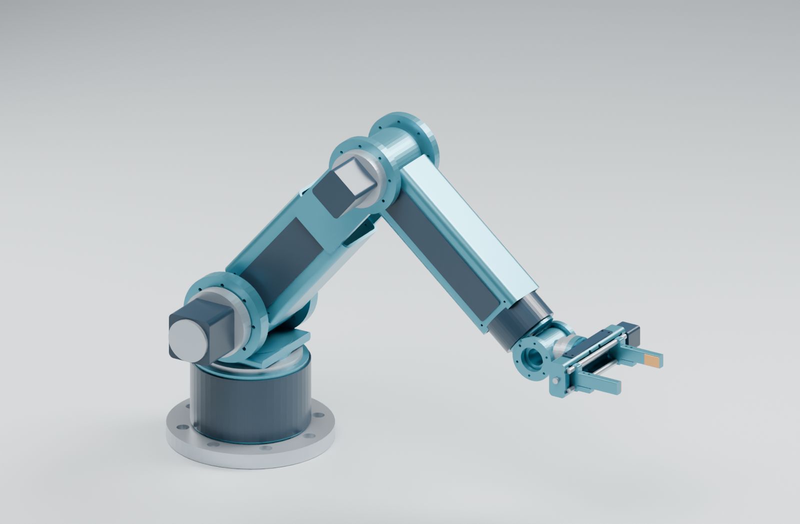

INSPECT ONLINE · EXPLORE IN CAD
The same build.
Your choice of tools.
Use the interactive viewers for a first look, then download the geometry or native project to measure and inspect it in your own software.
Design revision v1.2.0 · Millimetres for mechanical CAD · Packaged 28 October 2026

Start with STEP.
The standard solid-geometry exchange option for CAD inspection. Native files are available alongside it.
CAD exchange pack
The complete home assembly and all 54 individual parts in STEP, with corresponding STL meshes and dimensioned drawings.
STEP preserves solid geometry for measurement and section views. It does not contain the original feature history, motion constraints or motor simulation. STL is a faceted mesh and does not store units; use millimetres.
- Extract the ZIP.
- In your CAD application, choose Open or Import and select STEP/Assemblies/assembly_home.step.
- Use individual files for separate part inspection. They use local group frames; importing them all at one origin does not rebuild the positioned assembly.
For CAD tools that support STEP import, including FreeCAD and Fusion. Check your application's STEP import support.
Native assembly document
The original saved home assembly with its 54 named solid objects and project metadata. Open Model/indrbt_home.FCStd in FreeCAD after extracting the pack.
This is a saved-solid inspection document. The parametric construction lives in the project's Build123d source; this file is not a sketch-and-feature history or a constrained motion assembly.
Inspect the actual KiCad project.
Joint-interface electronics
The schematic, routed board, project settings, custom rules and local library context, plus readable circuit drawings and the native 3D board export.
- Extract the entire ZIP; keep its folders together.
- Open KiCad/joint_interface.kicad_pro in KiCad 10.
- Open Schematic Editor or PCB Editor to inspect components, nets and copper layers.
KiCad's standard symbol, footprint and 3D libraries are needed for library editing and the full native 3D view. The included GLB is a display model; it is not a substitute for editable PCB data. This interface board uses an external controller and motor drive.
Board geometry for mechanical CAD
A native KiCad STEP export of the 100 × 100 mm board, fitted component bodies and exported copper, mask and silkscreen. Extract the pack and import indrbt_joint_interface.step into your STEP-capable CAD application. Units are millimetres.
This supports board placement, clearance and section inspection. Use the KiCad project for editable electrical connections and rules. F1 has copper lands without a fuse body; JP1 is bare copper; optional R14/R15 component bodies are excluded. Geometric validity does not establish physical fit.
Know what you’re opening.
These downloads contain selected project files from the public GitHub repository. No private repository access is required. Each pack includes instructions, attribution and a file manifest. Source engineering files are preserved byte for byte.
Geometry, drawings and recorded digital checks support inspection. Payload, repeatability, tolerances, physical performance and manufacturing qualification remain unverified. See the engineering walkthrough for assumptions and results.
Complete offline viewer and CAD pack ↗ · Archive checksums ↓ · File and source manifest · Credits and licences